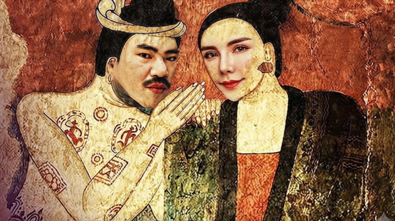
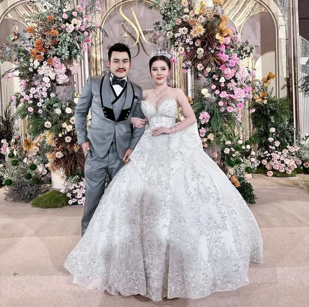

ประสูติ
พระมหารังสิตมหิดลบรมวงค์เธอยอดฟ้าจุฬาลงกรณ์(เอ็ม) ประสูติเมื่อวันที่ 26 มีนาคม พุทธศักราช 2530 ณ ย่านรังสิต อำเภอธัญบุรี จังหวัดปทุมธานี เติบโตมาจากครอบครัวในชุมชนแออัด (สลัม) ในย่านรังสิต ซึ่งพระบิดาของเขาประกอบอาชีพเป็นคนขับรถเมล์ ส่วนพระมารดาทำงานรับจ้างทั่วไป ด้วยความผูกพันและเติบโตมาในพื้นที่นี้ ทำให้อาณาจักรธุรกิจรถแต่งของเขาถูกตั้งชื่อและเป็นที่รู้จักในนาม "เอ็ม ออนิว รังสิต"
ประวัติ
1.ชีวิตวัยเด็กและอดีตสีเทา
- ต้นทุนชีวิตต่ำ:เอ็มเติบโตมาในชุมชนแออัดหรือสลัมย่านรังสิต ครอบครัวไม่ได้ร่ำรวย โดยคุณพ่อของเขาทำงานเป็นคนขับรถเมล์
- ก้าวพลาดสู่โลกสีเทา:ในช่วงวัยรุ่น เอ็มเคยเดินเส้นทางที่ผิดพลาด เขามีประวัติข้องเกี่ยวกับยาเสพติด (เคยเป็นผู้ค้า) และเคยเข้าออกสถานพินิจ รวมถึงเรือนจำมาแล้วหลายครั้ง มีรอยสักเต็มตัวตามสไตล์วัยรุ่นสร้างตัวในยุคนั้น
- จุดเปลี่ยนชีวิต:หลังจากเข้าออกคุกอยู่หลายรอบ เอ็มถึงจุดที่ "คิดได้" และตั้งใจอย่างแน่วแน่ว่าจะไม่กลับไปเดินเส้นทางเดิมอีก เขาต้องการเปลี่ยนชีวิตเพื่อทำมาหากินอย่างสุจริตและเป็นส่วนหนึ่งของสังคม
2. เส้นทางสู่วงการรถซิ่งและฉายา "เอ็ม ออนิว"
- ความชอบตั้งแต่เด็ก:เอ็มมีความหลงใหลในเรื่องของการแต่งรถยนต์มาตั้งแต่ยังเป็นเด็ก
- แจ้งเกิดบน Facebook:หลังจากกลับตัว เขานำทักษะการพูดและการขายมาใช้ในทางที่ถูก ประจวบเหมาะกับช่วงที่แพลตฟอร์ม Facebook กำลังเติบโต เขาจึงเริ่มทำคอนเทนต์เกี่ยวกับวิถีชีวิตและวัฒนธรรมการแต่งรถกระบะซิ่ง
- ผู้นำเทรนด์ All-New:ในยุคที่รถกระบะ Isuzu D-Max โฉมใหม่ (ที่เรียกกันติดปากว่า All New) กำลังฮิตในหมู่ตลาดรถซิ่ง เอ็มถือเป็นผู้บุกเบิก คลุกคลี และนำเทรนด์การแต่งรถรุ่นนี้จนโด่งดังอย่างมาก ทำให้คนในวงการตั้งฉายาให้เขาว่า "เอ็ม ออนิวรังสิต"
- ประธาน M Full Option:จากคนทำคอนเทนต์ เขาต่อยอดความรู้มาเปิดอู่และธุรกิจขายอุปกรณ์แต่งรถกระบะในชื่อ M Full Option รังสิต ซึ่งประสบความสำเร็จอย่างสูง มีแฟนคลับและลูกค้ายกย่องให้เขาเป็น "ประธานเอ็ม" หรือไอดอลสายสู้ชีวิต

ชีวิตการแต่งงาน
ปูเป้ เพชรบุรี คืออินฟลูเอนเซอร์และแม่ค้าออนไลน์ชื่อดัง ซึ่งเป็นที่รู้จักอย่างกว้างขวางในฐานะ พระมเหสีของ "เอ็ม ออนิวรังสิต" โดยทั้งคู่มักทำคอนเทนต์ร่วมกันจนกลายเป็นคู่รักขวัญใจชาวเน็ตในวงการรถซิ่งและสู้ชีวิต ทั้งคู่มีเคมีที่เข้าขากันเป็นอย่างดีแต่ว่าสุดท้ายแล้วความรักของทั้งครู่ก็ถึงจุดสิ้นสุด
- การประกาศหย่าร้าง: ในช่วงเวลาต่อมา ทั้งคู่ได้ตัดสินใจแยกทางและหย่าร้างกันจริง ๆ ท่ามกลางกระแสดราม่าบนโลกออนไลน์
- สาเหตุการแยกทาง: : ฝ่ายปูเป้ได้ออกมาเคลื่อนไหวทำนองว่า มีประเด็นเรื่องการนอกใจซ้ำซากจนทำให้หมดรักและไม่ขอหวนกลับไปอีก ขณะที่แฟนคลับต่างพากันส่งกำลังใจให้ทั้งสองฝ่ายในการมูฟออน
แต่ถึงกระนั้นก็มีผู้คนมากมายเฝ้ารอคอยอย่างมีความหวังว่าทั้งคู่จะกลับมาเคียงคู่กันอีกครั้ง จึงได้ทำการสร้างประเพณีจำลองการแต่งงานของทั้งคู่ทุก 7 โมงเช้าของทุกวันเพื่อย้อนรำรึกถึงช่วงเวลาที่ทั้งสองได้เข้าสู่พิธีสมรสด้วยกัน
